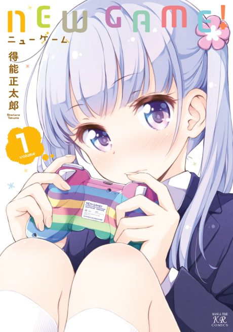

NEW GAME!
NEW GAME!
Aoba, fresh out of high school, joins the game company that made her favourite games as a character designer.
After the anime, read the manga from Chapter 86.
7.4AniList score
—Animeter, no votes yet
24episodes, 2 seasons
Rate it or report where you stopped
2 seasons, 24 episodes
In airing order. Episode numbers on this site count straight through every season, so season 2 starts at episode 13.
1
2016 · TV
NEW GAME!
Episodes1–1212 ep
2
2017 · TV
NEW GAME!!
Episodes13–2412 ep
Films, OVAs and specials
Not counted in the episode numbers above.
·
2017 · OVA
NEW GAME!: Watashi, Shainryokoutte Hajimete na no de...
Sources: AniList